Choose a lesson. Build a model. Discover the science.
Change height and base, then test for tipping.

Compare a frame, triangular truss and arch under load.

Move two riders and change their masses to discover balance.

Turn meshing gears and compare their direction and speed.

Push a virtual blade and see how its sloping faces separate a sample.

Compare two ramps: less force, more distance, the same rise.

Count the turns needed to seat fine, medium and coarse screws.

Disassemble, reassemble and crank a sharpener to reveal how its parts work together.

Separate and operate tools to discover levers and cutting wedges.